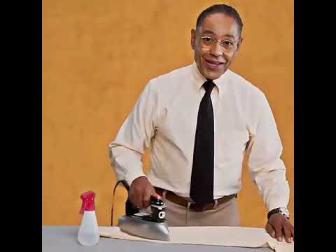

How to look trusworthy

I Investigate Everyone With Whom I Do Business. What Careful Man Wouldn't?
Recipe
You want that everything look smooth as possible
- First verify your shirt needs, different fabrics requery different needs
- with your iron heated sprinkle some water in the shirt
- do circular moves, and make sure to leave no traces
- With the sleeves, be Careful to not leave any sign
- and that is it, make sure to leave everything unsuspected when you leave
Back to main page